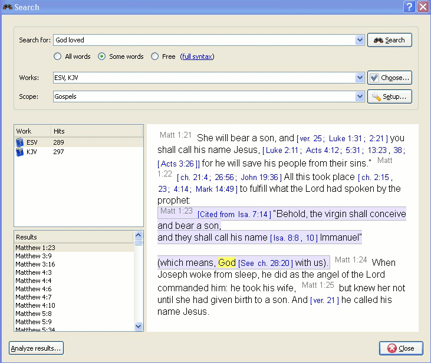

Voit katsoa sanaa tai fraasia avoimesta lukuikkunasta (s.o. Raamatun luku, jota olet lukemassa) juuri kuten olet tottunut muista ohjelmista. Tämä toiminnon saa napsauttamalla hiiren painiketta ja valitsemalla , tai käyttämällä pikakomentoa CtrlF. Lue oppiaksesi etsimään koko teoksesta.
Voit etsiä teoksessa napsauttamalla hiiren painiketta symbolin päällä ja valitsemalla . Pitämällä Shift tai Ctrl ja napsauttamalla toista teoksen nimeä, voit valita useamman kuin yhden teoksen. Sitten samanlaisella prosessilla avaa etsintäikkuna. Etsit kaikista näistä teoksista samaan aikaan..
Pääset hakuikkunaan napsauttamalla päävalikonssa ja valitsemalla sopivan toiminnon.
Kolmas mahdollisuus aloittaa hakuja on napsauttaa hiirellä hakusymbolia avoimessa lukuikkunassa.
|  |
Asetukset-välilehden yläosasta löydät (teokset). Jos haluat etsiä useista teoksista, napsauta tätä painiketta. Sinulle tarjotaan valikko, josta voit valita haluamasi teokset. Haku etsii niistä teoksista.
Voit rajata haun laajuutta tiettyihin Raamatun osiin valitsemalla jonkin ennalta määritellyistä laajuuksista luettelossa . Voit määritellä oman hakusi rajat napsauttamalla painiketta.
Kirjoita hakulause välilyönnillä erotettuna. Oletuksena hakutoiminto tuottaa tulokset, jotka vastaavat kaikkia sanoja. Jos haluat löytää syötetyistä sanoista, valitse painiketta. Jos haluat tehdä monipuolisemman haun, valitse painike. Voit nähdä esimerkkejä hauista napsauttamalla .
Voit käyttää jokerimerkkejä: '*' vastaa mitä tahansa merkkijonoa, kun taas '?' vastaa mitä tahansa yhtä merkkiä. Sulkujen käytöllä voit ryhmitellä hakutermejä, esim. '(Jeesus TAI henki) JA Jumala'. Huom. Ohjelmassa voi käytössä olla englanninkieliset sanat. TAI = OR ja JA = AND.
Jos haluat hakea muuta kuin päätekstiä, kirjoita tekstityyppi, jota seuraa ':' ja sitten hakutermi. Katso esimerkkejä alla olevasta taulukosta.
Saatavilla olevat tekstityypit:
Taulu 3.1. Etsimistyypit
| Etuliite | Merkitys | Esimerkki |
|---|---|---|
| otsikko: | etsii otsikoita | otsikko:Jeesus |
| alaviite: | etsii alaviitteitä | alaviite:Mooses |
| vahvennos: | etsii Strongin numeroita | strong:G535 |
| muoto: | etsii mofologisia koodeja | morph:N-GSM |
Voit napsauttaa hiiren oikealla painikkeella teosta ja valita löytääksesi edelläolevista kriteereistä sen, joka sopii sinulle. Kaikissa teoksissa ei ole sisäänrakennettua ominaisuutta tällaiselle etsinnälle.
BibleTime käyttää Lucene-etsintäkonetta toteuttaaksesi hakusi. Siinä on monta edistyksellistä ominaisuutta. Voit lukea lisää siitä täällä: http://lucene.apache.org/java/docs/index.html.
Tässä voit nähdä, kuinka monta hakujonon esiintymää löytyi, järjestettynä teosten mukaan. Napsauttamalla teosta hiiren painikkeella, voit kopioida, tallettaa tai tulostaa kaikki löytyneet jakeet siinä teoksessa sillä haulla. mouse button allows you to copy, save, or print all verses that were found in a certain work at once. This also works when you click on one or more of the references to copy, save or print them. Clicking on a particular reference opens that verse up in context in the preview window below.
Vedä viite ja pudota se teoksen symboliin kirjahyllyssä avataksesi teoksen lukuikkunaan sen jakeen kohdalta.
Vedä viite ja pudota se avoimeen lukuikkunaan ja lukukohta hyppää sen jakeen kohdalle.
Valitse viitteet ja vedä ne kirjahyllyyn luodaksesi kirjanmerkkejä.